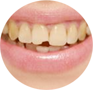
牙齿发黄
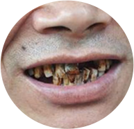
牙齿发黑
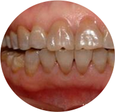
四环素牙
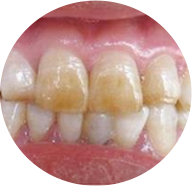
色素牙
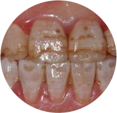
氟斑牙
黄牙即是牙齿发黄， 形成的原因有三种：第一种是斑釉牙，又称为氟斑牙，为饮水中氟元素浓度过高所致。当氟浓度超过百万分之一时，就会影响牙胚的钙化过程，牙齿表面发黄，凹凸不平，出现点状或条状凹陷性缺损。
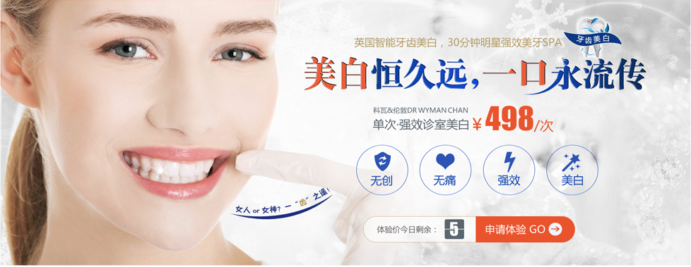
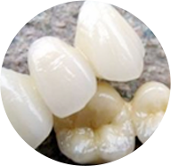
烤瓷牙

全瓷牙
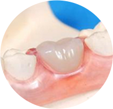
镶牙
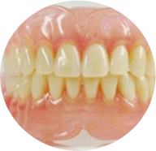
假牙
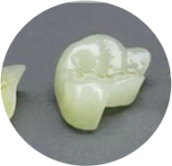
牙齿缺损
烤瓷牙是恢复牙齿缺损及达到功能和美观要求的修复牙冠。从结构上分内冠和釉面瓷层，从质地上分为金属内冠、和全瓷内冠烤瓷
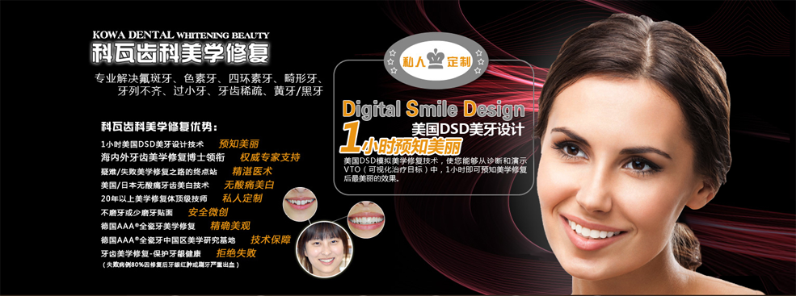
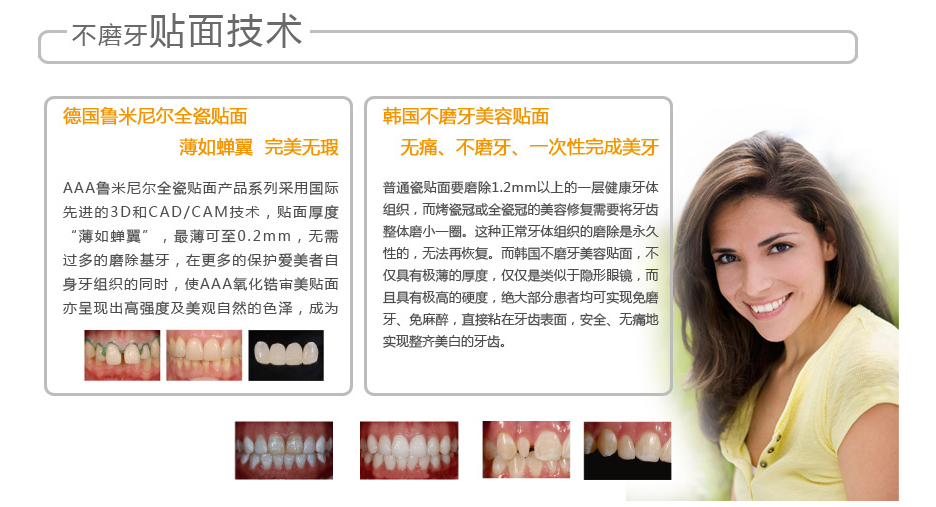
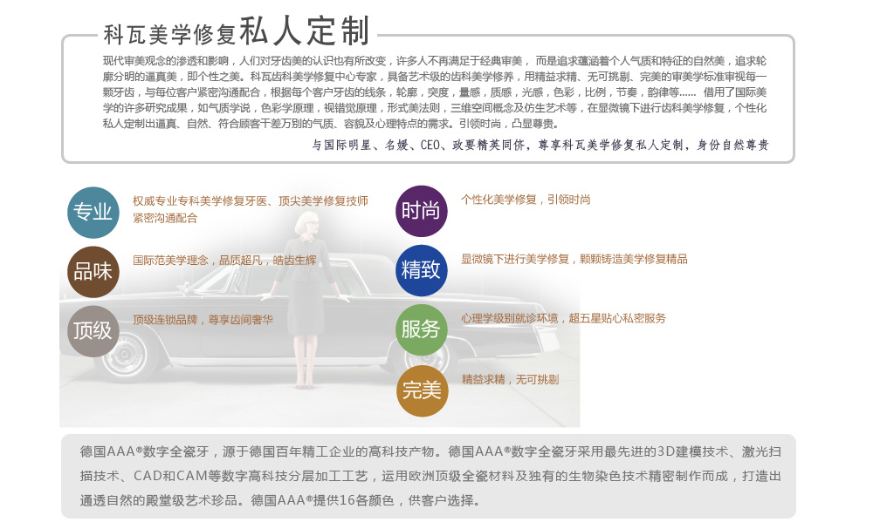

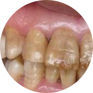
牙龈萎缩（牙根暴露）
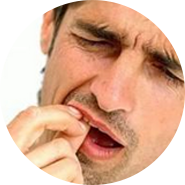
牙齿松动
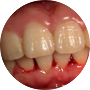
牙龈出血（红肿）
牙龈和牙槽骨骨组织的退缩性病变。表现为牙龈退缩，牙颈部或牙根暴露。发生牙周萎缩的主要原因是：牙颈部牙石对牙龈的压迫；该部位牙的长期废用或全身性因素所致；不正确的刷牙方法带来的机械性刺激；修复体压迫牙龈等
牙痛
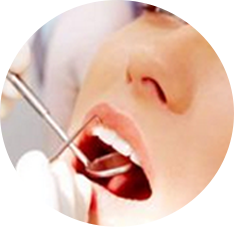
补牙

根管治疗
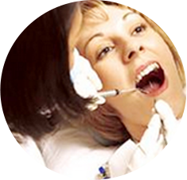
拔牙
牙齿硬组织的疾病称为牙体病，广义的牙体病也包括牙髓病。 龋病是一种由口腔中多种因素复合作用所导致的牙齿硬组织进行性病损，表现为无机质的脱矿和有机质的分解，随着病程的发展而有一色泽变化到形成实质性病损的演变过程。世界卫生组织已将其与癌肿和心血管疾病并列为人类三大重点防治疾病。
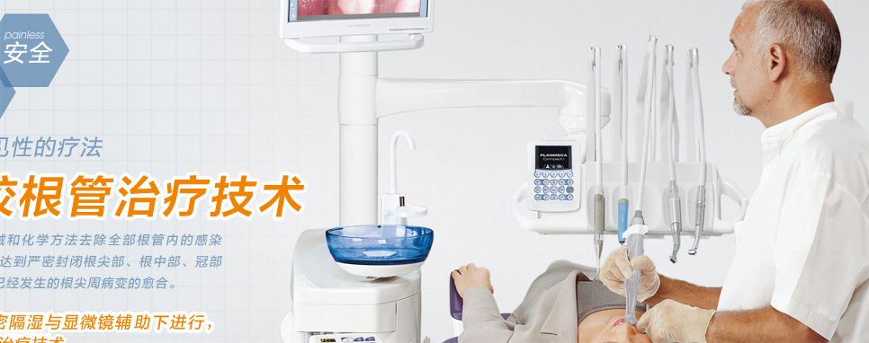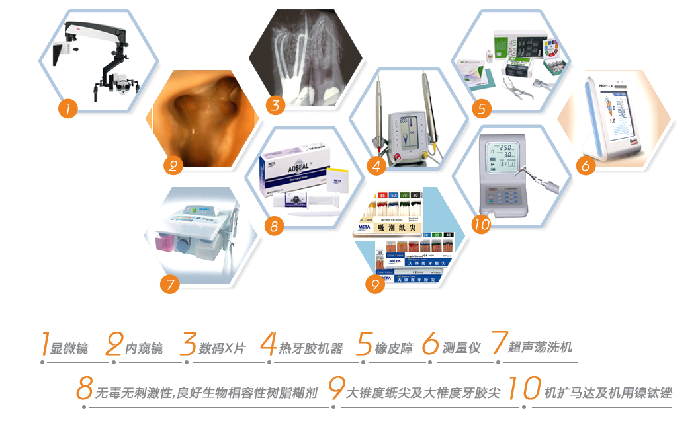
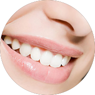
牙齿美白
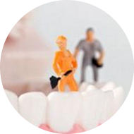
口腔修复
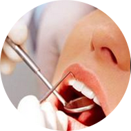
无痛洁牙
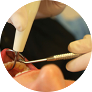
牙周治疗
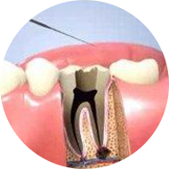
牙体牙髓
牙齿美白
口腔修复
无痛洁牙
牙周治疗
牙体牙髓
矫正龅牙有哪些方法？
1、 传统牙齿矫正
传统牙齿矫正就是我们所说的钢丝牙套，是通过在牙齿表面黏上托槽，即牙齿矫正器，再在托槽上扣上钢线，并以钢线施力来使牙齿移动，令牙齿重新排列。
2、 无托槽隐形矫正
无托槽隐形矫正技术，是根据每个人的实际情况，通过计算机辅助三维诊断、设计和制造系统，用一系列个性化的透明矫治器，来完成矫治的正畸技术，具有美观、定位精准、清洁方便等优点。
如何选择矫正医生？
性化的透明矫治器，来完成矫治的正畸技术，具有美观、定位精准、清洁方便等优点。
牙齿矫正最佳年龄是几岁？
性化的透明矫治器，来完成矫治的正畸技术，具有美观、定位精准、清洁方便等优点。
牙齿矫正怎么样好？
性化的透明矫治器，来完成矫治的正畸技术，具有美观、定位精准、清洁方便等优点。
牙齿矫正最佳年龄是几岁？
性化的透明矫治器，来完成矫治的正畸技术，具有美观、定位精准、清洁方便等优点。